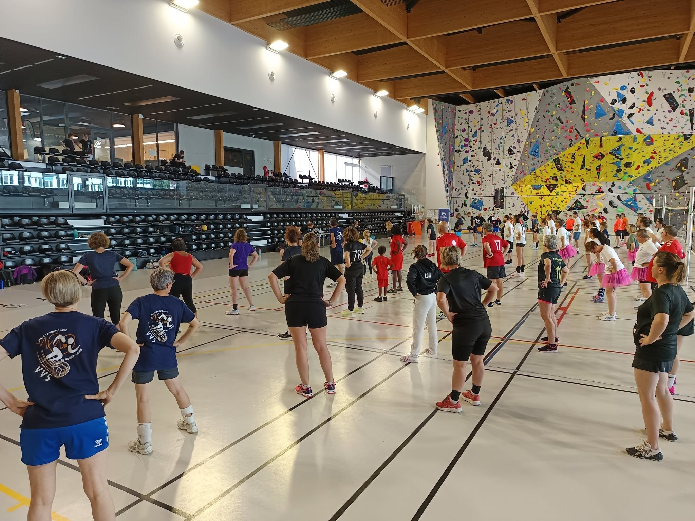
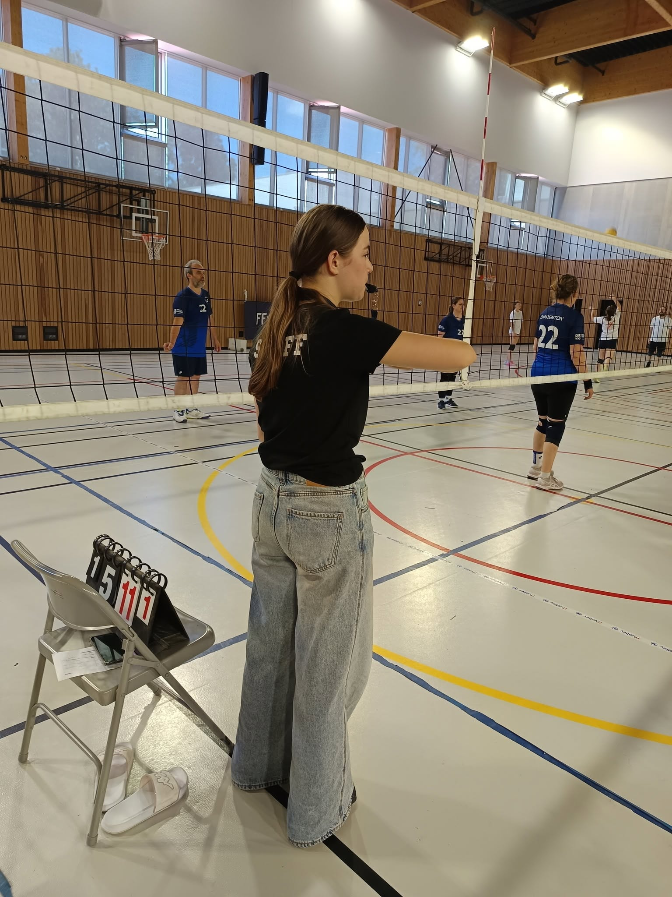

Souvenirs du Challenge à Sélestat
La communication par l'image est primordiale en événementiel. En tant qu'organisatrice, la couverture de l'événement via la captation de photos sur le terrain faisait partie de mes missions pour alimenter les réseaux de la FFVolley. Revivez l'ambiance de ce weekend !


